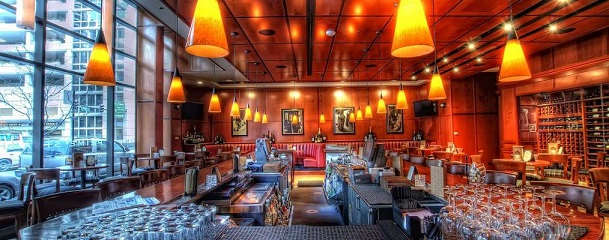

Enduldge and Enjoy
Flemmings Steak House in Boston
High-end steakhouse chain with aged prime beef & classics such as lobster tails & pork chops. This high end dineing experience is one of a kind and highly spoken of. Flemmings is a place of interest!
Address: 217 Stuart St, Boston, MA 02116
Hours: Open today · 5–10PM
Phone: (617) 292-0808
Menu: American cuisine
Reservations: Yes/Recommended